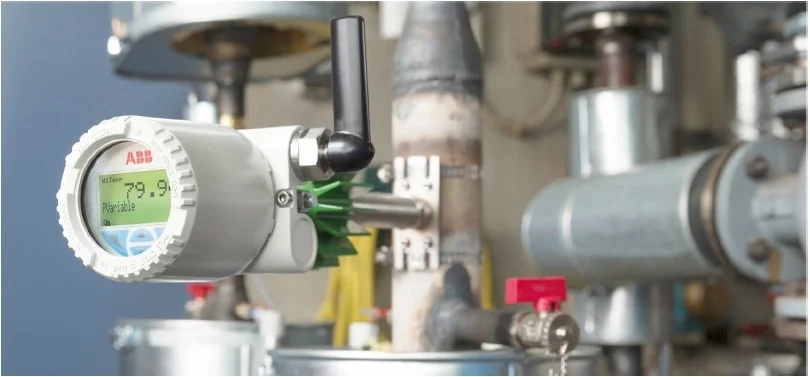
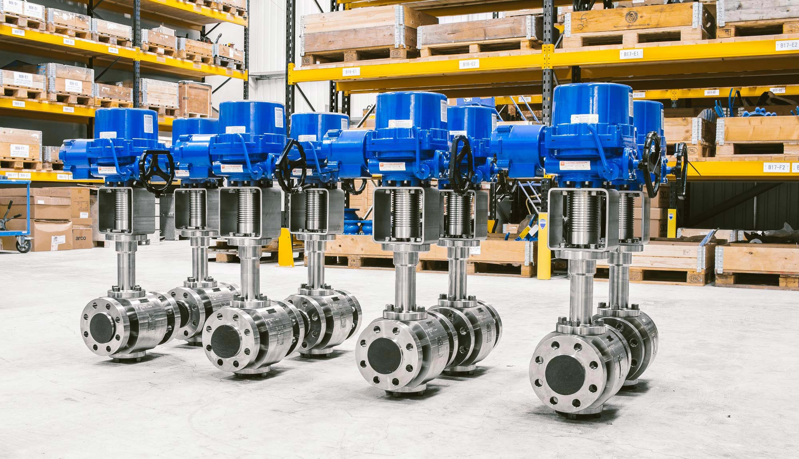
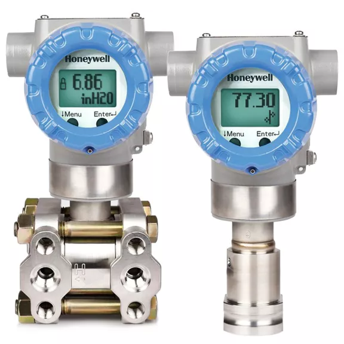
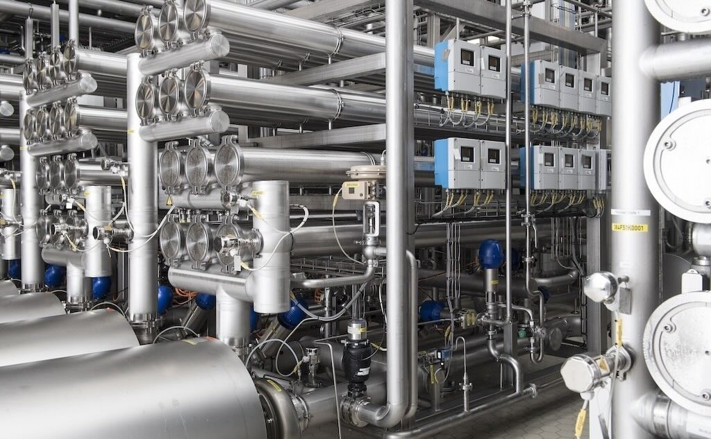

Sensors
Devices that detect and measure physical properties such as temperature, pressure, and vibration.

Devices that detect and measure physical properties such as temperature, pressure, and vibration.

Devices that receive signals from a control system and perform a mechanical action.

Devices that convert sensor signals into standardised signals for transmission to a control system.
Industrial instrumentation forms the sensory layer of any automation system. Without accurate and reliable field devices, no SCADA system or PLC can make correct decisions. In mining and processing plants, instrumentation monitors critical variables such as conveyor belt tension, pump pressure, tank levels, and motor temperatures — all in real time.
Proper calibration and maintenance of instrumentation devices is essential to prevent process faults and equipment failures. This is where predictive maintenance systems leverage sensor data to detect anomalies before they become costly breakdowns.
